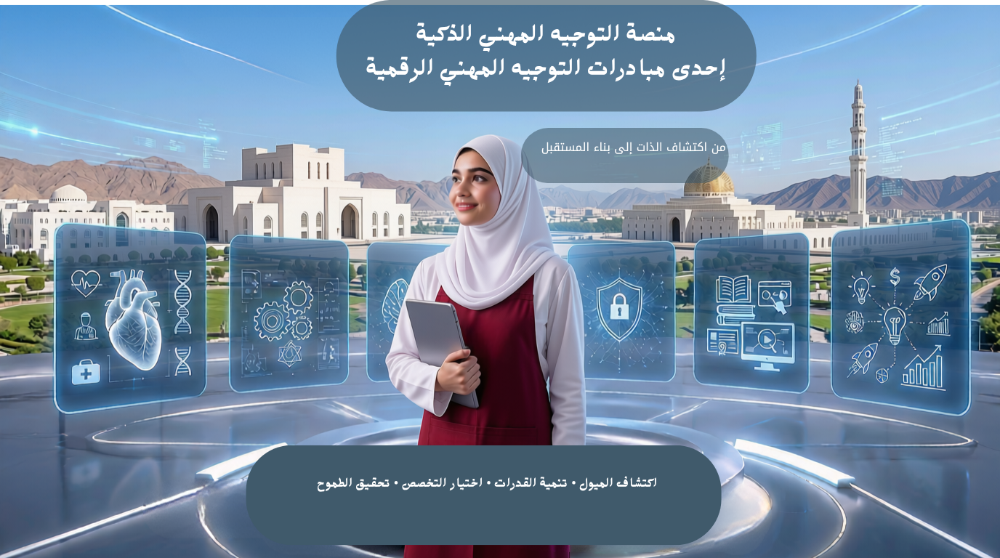

style="width:100%; max-widthإحدى مبادرات التوجيه المهني الرقمية
منصة رقمية ذكية تدعم الطالبات في اكتشاف الميول المهنية واختيار التخصصات الجامعية واتخاذ قرارات مستقبلية واعية.
منصة رقمية تهدف إلى تمكين الطالبات من اكتشاف الميول المهنية، واختيار المواد الدراسية المناسبة، والتعرف على التخصصات الجامعية، والتخطيط للمستقبل الأكاديمي والمهني.
الإحصائيات والمؤشرات المهنية
تحليل الميول المهنية للطالبات
إرشادات اختيار المواد الدراسية
التخصصات والجامعات وشروط القبول
الاستشارات الفردية والجماعية
البرامج والأنشطة المهنية
إحصائيات السمات الريادية
التعريف بالمنصة ورسالتها وأهدافها